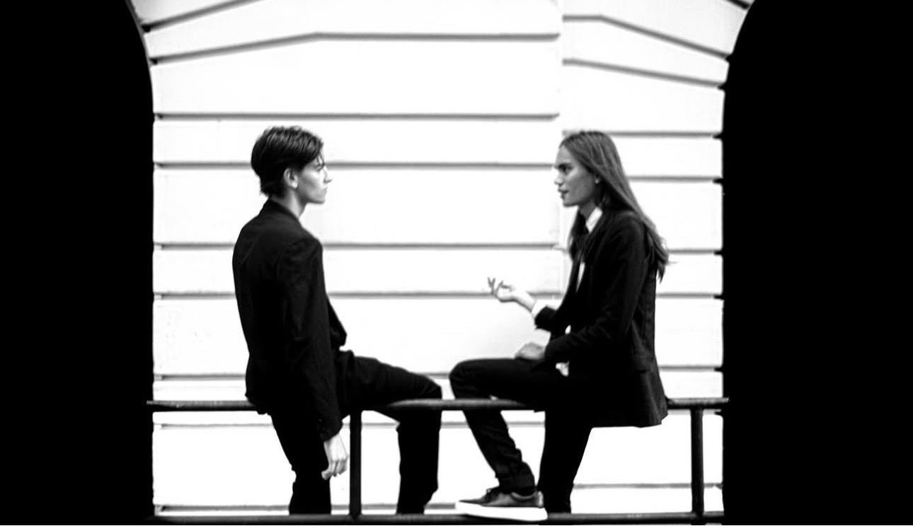
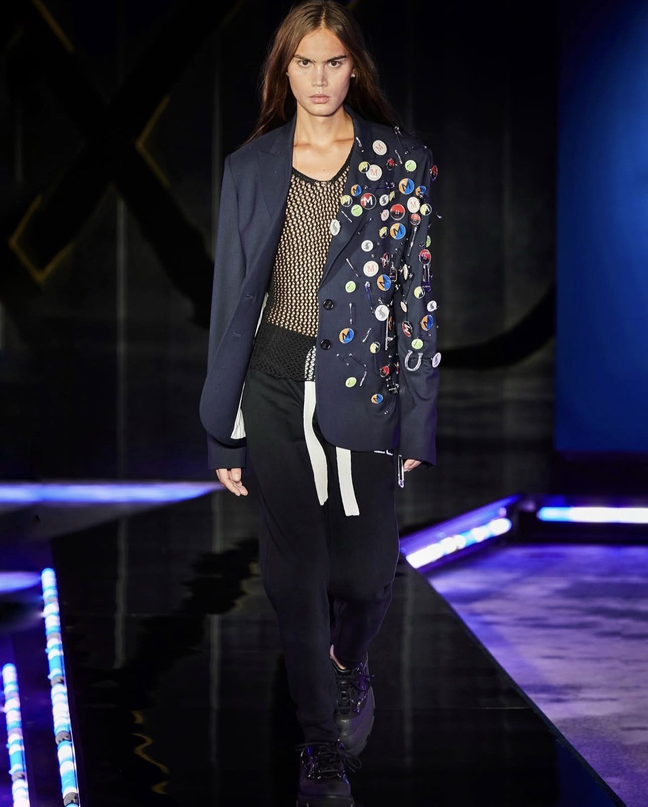

I spent much of my childhood attempting to piece together a fractured metaphysics. That instinct—to understand why things are the way they are—eventually shifted its focus from theology to the very structure of intelligence itself. Since then, "constraints" and "form" have remained my sole preoccupations.
My obsession with form has never wavered—whether on the runway, in a spreadsheet, or within code—save that what I now construct are the models themselves.


Referential Invariance in Language Models. Submitted to NeurIPS 2026. Demonstrated that frontier LLMs systematically fail to preserve referent identity under semantic pressure—RDR = 1.0 universally across nine models. Introduced RigidBench v3.1 and the Underdetermination Proposition as a diagnostic framework.
Sophia Protocol. Investigating the structural isomorphism between engineering constraints and moral alignment. Fine-tuned on Rust memory safety, distributed consensus, and thermodynamics. Preliminary results suggest that "Goodness" is not an external patch, but the optimal state of a rational system.
Distress Kernels. Interrupt-driven safety mechanisms for LLMs. Trauma-informed boundary enforcement using amygdala-inspired attention masks, Bayesian risk proxies, and D-REX deception detection. Crisis-first, zero-proof distress authentication.
DOWNLOAD RESUME (PDF)